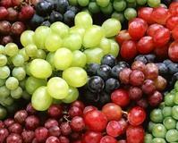

苹果，落叶乔木，叶子椭圆形，花白色带有红晕。果实圆形，味甜或略酸，
是常见水果，具有丰富营养成分，有食疗、辅助治疗功能。苹果原产于欧洲、
中亚、西亚和土耳其一带，于十九世纪传入中国。中国是世界最大的苹果生产国，
在东北、华北、华东、西北和四川、云南等地均有栽培。
苹果，落叶乔木，叶子椭圆形，花白色带有红晕。果实圆形，味甜或略酸，
是常见水果，具有丰富营养成分，有食疗、辅助治疗功能。苹果原产于欧洲、
中亚、西亚和土耳其一带，于十九世纪传入中国。中国是世界最大的苹果生产国，
在东北、华北、华东、西北和四川、云南等地均有栽培。

葡萄，葡萄属（Vitis）落叶藤本植物，掌叶状，3-5缺裂，复总状花序，通常呈圆锥
形，浆果多为圆形或椭圆，色泽随品种而异。人类在很早以前就开始栽培这种果树，几乎
占全世界水果产量的四分之一；其营养价值很高，可制成葡萄汁、葡萄干和葡萄酒。粒大
、皮厚、汁少、优质、皮肉难分离、耐贮运的欧亚种葡萄又称为提子。